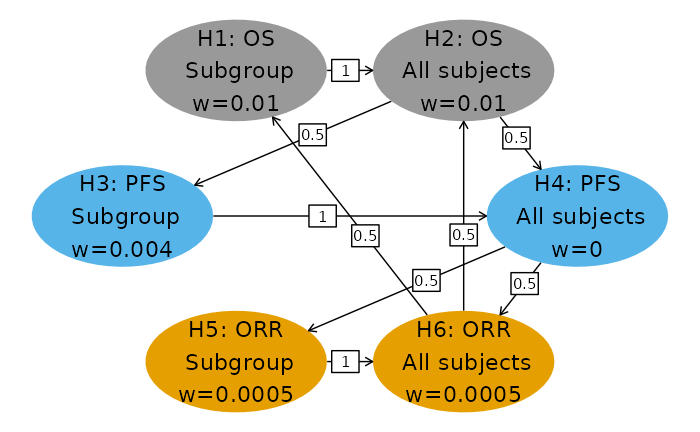
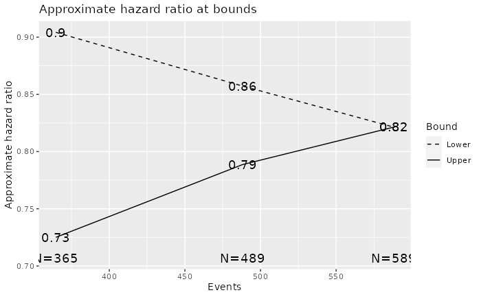

Graphical testing for group sequential design
Source:vignettes/GraphicalMultiplicity.Rmd
GraphicalMultiplicity.RmdOverview
This document is intended to evaluate statistical significance for graphical multiplicity control when used with group sequential design (Maurer and Bretz 2013). In particular, we demonstrate design and analysis of a complex oncology trial. There are many details building on the necessarily simple example provided by Maurer and Bretz (2013). The combination of tools provided by the gMCP and gsDesign packages is non-trivial, but developed in a way that is meant to be re-used in a straightforward fashion. This has been found to be particularly valuable to provide a prompt and verifiable conclusion in multiple trials such as Burtness et al. (2019) where 14 hypotheses were evaluated using a template such as this.
Given the complexity involved, substantial effort has been taken to provide methods to check hypothesis testing.
- The initial testing is done by using sequential p-values (Liu and Anderson 2008) which can then be plugged into standard graphical hypothesis testing R package, gMCP (Bretz, Maurer, and Posch 2009).
- The graphical testing produces a sequence including the original multiplicity graph, followed by updated multiplicity graphs, each with a single hypothesis rejected from the previous graph.
- The final graph, assuming not all hypotheses were rejected, provides the final Type I error available for testing each hypothesis that was not rejected.
- Updated group sequential bounds for each hypothesis at the largest alpha-level it was evaluated can be checked vs. nominal p-values at each analysis to verify the testing conclusions reached with the above methods.
The table of contents above lays out the organization of the document. In short, we begin with 1) design specification followed by 2) results entry which includes event counts and nominal p-values for testing, 3) carrying out hypothesis testing, and 4) verification of the hypothesis testing results.
Design
For the template example, there are 3 endpoints and 2 populations resulting in 6 hypotheses to be tested in the trial. The endpoints are:
- Overall survival (OS)
- Progression free survival (PFS)
- Objective response rate (ORR)
The populations to be studied are:
- The overall population (All subjects)
- A subgroup (Subgroup)
For simplicity, we design assuming the control group has an exponential time to event with a median of 12 months for OS and 5 months for PFS. We design under a proportional hazards assumption. ORR for the control group is assumed to be 15%. Some of the choices here are arbitrary, but the intent is to fully specify how patients will be enrolled and followed for \(\alpha\)-controlled study analyses.
The following design characteristics are also specified to well-characterize outcomes for all subjects by the end of the trial:
- Enrollment is assumed to occur over 18 months. Enrollment will continue until the targeted number of subjects has been enrolled in the subgroup to ensure power as planned for that population. This means, the overall population sample size will be random and power may vary from that planned here. The enrollment increases from 25% in the first two months to 50% in the second 2 months to 75% in the third two months of the final steady state enrollment which continues from the end of month 6 of enrollment until final enrollment expected at 18 months.
- The first interim analysis will be conducted 6 months after final patient enrolled to adequately assess ORR for all patients. Thus, the analysis is planned at 24 months after start of study enrollment, but will be adapted according to when final enrollment is completed. This is the only analysis for ORR and is an interim analysis for PFS and OS with whatever event counts are available at the cutoff.
- The second interim analysis will be conducted 14 months after final enrollment to ensure minimum follow-up almost 3 times the assumed control median PFS for all subjects. This would be delayed up to 3 months if the final targeted event count for PFS in the subgroup is not achieved at that time. This is to ensure a complete description of tail behavior for PFS in the case a PFS curve has a plateau. PFS and OS will be analyzed. The endpoint counts for OS and for the overall population for PFS are random since the cutoff is determined by the PFS endpoint count for the subgroup.
- The final analysis will be performed 24 months after final enrollment, ensuring 2 times the assumed median control survival as minimum follow-up for all subjects. Only analysis of OS is planned. The final analysis may be delayed up to 6 months if the targeted OS event count in the subgroup is not achieved. Thus, the planned total duration of the trial for the OS endpoint is 42 months.
The sample size for the trial will be driven by an adequate sample size and targeted events in the subgroup to ensure 90% power for the OS endpoint assuming a hazard ratio of 0.65. For group sequential designs, we assume 1-sided testing.
To reveal code blocks for the remainder of the document, press the code buttons indicated throughout. The initial code block sets options and loads needed packages; no modification should be required by the user.
### THERE SHOULD BE NO NEED TO MODIFY THIS CODE SECTION
options(scipen = 999)
# Colorblind palette
cbPalette <- c("#999999", "#E69F00", "#56B4E9", "#009E73", "#F0E442", "#0072B2", "#D55E00", "#CC79A7")
# 3 packages used for data storage and manipulation: dplyr, tibble
library(dplyr)
library(tibble)
# 2 packages used for R Markdown capabilities: knitr, kableExtra
library(knitr)
library(kableExtra)
library(gt)
library(ggplot2) # For plotting
library(gsDesign) # Group sequential design capabilities
library(gMCP) # Multiplicity evaluationMultiplicity diagram for hypothesis testing
Following is the multiplicity graph for the trial design. We have arbitrarily split Type I error equally between the subgroup and overall populations. Most \(\alpha\) is allocated to OS and the least to ORR, with PFS receiving an intermediate amount. This reflects the priority of the endpoints as well as the practicality to detect clinically significant differences in each population. Reallocation for each endpoint proceeds from the subgroup to the overall population. If the overall population hypothesis is rejected for a given endpoint, the reallocation is split between the two populations for another endpoint. The choice for allocation and reallocation illustrated here is to demonstrate a complex multiplicity scenario; when actually applying this method the allocation and realloation choices should be carefully considered.
### THIS CODE NEEDS TO BE MODIFIED FOR YOUR STUDY
# If needed, see help file for gsDesign::hGraph() for explanation of parameters below
# Hypothesis names
nameHypotheses <- c(
"H1: OS\n Subgroup",
"H2: OS\n All subjects",
"H3: PFS\n Subgroup",
"H4: PFS\n All subjects",
"H5: ORR\n Subgroup",
"H6: ORR\n All subjects"
)
# Number of hypotheses to be tested
nHypotheses <- length(nameHypotheses)
# Transition weights for alpha reallocation (square matrix)
m <- matrix(c(
0, 1, 0, 0, 0, 0,
0, 0, .5, .5, 0, 0,
0, 0, 0, 1, 0, 0,
0, 0, 0, 0, .5, .5,
0, 0, 0, 0, 0, 1,
.5, .5, 0, 0, 0, 0
), nrow = 6, byrow = TRUE)
# Initial Type I error assigned to each hypothesis (one-sided)
alphaHypotheses <- c(.01, .01, .004, 0.000, 0.0005, .0005)
fwer <- sum(alphaHypotheses)
# Make a ggplot representation of the above specification and display it
g <- gsDesign::hGraph(6,
alphaHypotheses = alphaHypotheses, m = m, nameHypotheses = nameHypotheses,
halfWid = 1, halfHgt = .35, xradius = 2.5, yradius = 1, offset = 0, trhw = .15,
x = c(-1.25, 1.25, -2.5, 2.5, -1.25, 1.25), y = c(2, 2, 1, 1, 0, 0),
trprop = 0.4, fill = as.character(c(2, 2, 4, 4, 3, 3))
) + scale_fill_manual(values = cbPalette)
print(g)
This testing scheme can result in what might be referred to as time travel for passing of \(\alpha\). That is, if PFS hypotheses are not rejected at a given analysis (say final PFS analysis) and OS hypotheses are rejected at the final analysis, then the previously evaluated PFS tests at the interim and final PFS analysis can be compared to updated bounds based on reallocated Type I error. While this practice was not encouraged by Maurer and Bretz (2013), it was acknowledged to control Type I error as previous discussed in (Liu and Anderson 2008). Given the stringent Type I error control for multiple hypotheses, the ability to acknowledge clinically significant differences as statistically significant can be important in describing treatment benefits in regulatory labeling for a treatment.
Group sequential designs for each hypothesis
For the example, we assume 1-sided testing or a non-binding futility bound as required for a Maurer and Bretz (2013) design using group sequential design with graphical multiplicity control. Each is demonstrated in the example code for respective hypotheses. Efficacy \(\alpha\)-spending for all group sequential designs uses the Lan and DeMets (1983) spending function approximating an O’Brien-Fleming bound.
This section needs to be modified by the user to match the study design under consideration. Those uncomfortable with coding may wish to design using the gsDesign Shiny app which provides not only a point and click interface, but also a code tab that generates R code that can be copied and plugged in for designs below.
We assume 50% of the population is in the subgroup of interest. A sample size of 378 is driven by overall survival (OS) in the subgroup where we assume a hazard ratio of 0.65. Here we assume a one-sided group sequential design with no futility bound.
osmedian <- 12 # Median control survival
# Derive group sequential design for OS in the targeted subgroup
ossub <- gsDesign::gsSurv(
k = 3, # 3 analyses for OS
test.type = 1, # Efficacy bound only (no futility)
alpha = alphaHypotheses[1], # Allocated alpha from design hypothesis group
beta = 0.1, # Type 2 error (1 - power)
hr = 0.65, # Assumed hazard ratio for power calculation
timing = c(0.61, 0.82), # Choose these to match targeted calendar timing of analyses
sfu = sfLDOF, # Spending function to approximate O'Brien-Fleming bound
lambdaC = log(2) / osmedian, # Exponential control failure rate
eta = 0.001, # Exponential dropout rate
gamma = c(2.5, 5, 7.5, 10), # Relative enrollment rates by time period
R = c(2, 2, 2, 12), # Duration of time periods for rates in gamma
T = 42, # Planned study duration for OS
minfup = 24 # Planned minimum follow-up after end of enrollment
)
tab <- gsDesign::gsBoundSummary(ossub)
rownames(tab) <- 1:nrow(tab)
cat(summary(ossub))One-sided group sequential design with 3 analyses, time-to-event outcome with sample size 378 and 284 events required, 90 percent power, 1 percent (1-sided) Type I error to detect a hazard ratio of 0.65. Enrollment and total study durations are assumed to be 18 and 42 months, respectively. Efficacy bounds derived using a Lan-DeMets O’Brien-Fleming approximation spending function with none = 1.
The above text was automatically generated and could be edited appropriately for description of the design. Following is a summary table describing study bounds.
# tab %>% kable(caption = "Design for OS in the subgroup.") %>% kable_styling()
tab %>%
gt() %>%
tab_header(title = "Design for OS in the Subgroup") %>%
cols_align(align = "left", columns = Value) %>%
tab_footnote(
footnote = "Cumulative boundary crossing probability includes crossing probability at earlier analysis.",
locations = cells_body(columns = "Value", rows = c(9, 10, 14, 15))
) %>%
tab_footnote(
footnote = "Approximate hazard ratio at bound.",
locations = cells_body(columns = "Value", rows = c(3, 8, 13))
)| Design for OS in the Subgroup | ||
|---|---|---|
| Analysis | Value | Efficacy |
| IA 1: 61% | Z | 3.0981 |
| N: 378 | p (1-sided) | 0.0010 |
| Events: 173 | ~HR at bound1 | 0.6243 |
| Month: 24 | P(Cross) if HR=1 | 0.0010 |
| P(Cross) if HR=0.65 | 0.3986 | |
| IA 2: 82% | Z | 2.6404 |
| N: 378 | p (1-sided) | 0.0041 |
| Events: 233 | ~HR at bound1 | 0.7073 |
| Month: 32 | P(Cross) if HR=12 | 0.0044 |
| P(Cross) if HR=0.652 | 0.7469 | |
| Final | Z | 2.3825 |
| N: 378 | p (1-sided) | 0.0086 |
| Events: 284 | ~HR at bound1 | 0.7535 |
| Month: 42 | P(Cross) if HR=12 | 0.0100 |
| P(Cross) if HR=0.652 | 0.9000 | |
| 1 Approximate hazard ratio at bound. | ||
| 2 Cumulative boundary crossing probability includes crossing probability at earlier analysis. | ||
The total sample size is assumed to be twice the above, N=756. The power and hazard ratio can be adjusted to appropriately size the trial rather than starting with adjusting sample size to reach a targeted power. For this example, we consider altering power (beta) while fixing the hazard ratio at 0.75, representing an increase in median OS from 12 months in the control group to 16 months in the experimental group. For this design, we consider a non-binding futility bound where the trial may be stopped early in the overall population if the bound is crossed. We use a Hwang, Shih, and De Cani (1990) bound with \(\gamma = -3.25\). Study designers should carefully consider implication for parameter choices, particularly if the futility bounds provide sensible guidance for stopping the trial. Since the futility bounds are non-binding, the efficacy bound is computed assuming the futility bound is ignored which will control Type I error at the targeted level even if a futility bound is crossed and the trial is continued.
hr <- .75
beta <- .14
os <- gsDesign::gsSurv(
k = 3, test.type = 4, alpha = 0.01, beta = beta, hr = hr,
timing = c(0.62, 0.83), sfu = sfLDOF,
sfl = sfHSD, sflpar = -3.25,
lambdaC = log(2) / 12, eta = 0.001, S = NULL,
gamma = c(2.5, 5, 7.5, 10), R = c(2, 2, 2, 12),
T = 42, minfup = 24
)
tab <- gsDesign::gsBoundSummary(os)
rownames(tab) <- 1:nrow(tab)
cat(summary(os))Asymmetric two-sided group sequential design with non-binding futility bound, 3 analyses, time-to-event outcome with sample size 756 and 589 events required, 86 percent power, 1 percent (1-sided) Type I error to detect a hazard ratio of 0.75. Enrollment and total study durations are assumed to be 18 and 42 months, respectively. Efficacy bounds derived using a Lan-DeMets O’Brien-Fleming approximation spending function with none = 1. Futility bounds derived using a Hwang-Shih-DeCani spending function with gamma = -3.25.
tab %>%
kable(caption = "Design for OS in all subjects") %>%
kable_styling()| Analysis | Value | Efficacy | Futility |
|---|---|---|---|
| IA 1: 62% | Z | 3.0699 | 0.9611 |
| N: 756 | p (1-sided) | 0.0011 | 0.1682 |
| Events: 365 | ~HR at bound | 0.7250 | 0.9042 |
| Month: 24 | P(Cross) if HR=1 | 0.0011 | 0.8318 |
| P(Cross) if HR=0.75 | 0.3750 | 0.0367 | |
| IA 2: 83% | Z | 2.6231 | 1.7013 |
| N: 756 | p (1-sided) | 0.0044 | 0.0444 |
| Events: 489 | ~HR at bound | 0.7886 | 0.8573 |
| Month: 32 | P(Cross) if HR=1 | 0.0047 | 0.9585 |
| P(Cross) if HR=0.75 | 0.7160 | 0.0782 | |
| Final | Z | 2.3857 | 2.3857 |
| N: 756 | p (1-sided) | 0.0085 | 0.0085 |
| Events: 589 | ~HR at bound | 0.8214 | 0.8214 |
| Month: 42 | P(Cross) if HR=1 | 0.0094 | 0.9906 |
| P(Cross) if HR=0.75 | 0.8600 | 0.1400 |
We can also plot different design characteristics. Here, we plot the approximate hazard ratio to cross each bound which may be helpful for design team discussions.
plot(os, plottype = "HR", xlab = "Events")
For progression free survival (PFS) we assume a shorter median time to event of 5 months. With an assumed hazard ratio of 0.65, we adjust beta and timing to match the targeted sample size and interim analysis timing. We assume a larger dropout rate for PFS than we did for OS. Here we set up a futility bound for safety. This is an asymmetric 2-sided design with both futility and efficacy boundary crossing probabilities under the null hypothesis. The parameter astar = 0.1 specifies total lower bound spending of 10%. The lower Hwang, Shih, and De Cani (1990) spending bound with \(\gamma = -8\) is intended to be conservative in terms of futility at the interim, but still provide a safety bound for the PFS result in this targeted population. This would have to be carefully evaluated by the study design team at the time of design.
hr <- .65
beta <- .149
pfssub <- gsDesign::gsSurv(
k = 2, test.type = 6, astar = 0.1, alpha = 0.004, beta = beta, hr = hr,
timing = .87, sfu = sfLDOF,
sfl = sfHSD, sflpar = -8,
lambdaC = log(2) / 5, eta = 0.02, S = NULL,
gamma = c(2.5, 5, 7.5, 10), R = c(2, 2, 2, 12),
T = 32, minfup = 14
)
tab <- gsDesign::gsBoundSummary(pfssub)
rownames(tab) <- 1:nrow(tab)
cat(summary(pfssub))Asymmetric two-sided group sequential design with non-binding futility bound, 2 analyses, time-to-event outcome with sample size 378 and 296 events required, 85.1 percent power, 0.4 percent (1-sided) Type I error to detect a hazard ratio of 0.65. Enrollment and total study durations are assumed to be 18 and 32 months, respectively. Efficacy bounds derived using a Lan-DeMets O’Brien-Fleming approximation spending function with none = 1. Futility bounds derived using a Hwang-Shih-DeCani spending function with gamma = -8.
tab %>%
kable(caption = "Design for PFS in the subgroup") %>%
kable_styling()| Analysis | Value | Efficacy | Futility |
|---|---|---|---|
| IA 1: 87% | Z | 2.8734 | -1.8077 |
| N: 378 | p (1-sided) | 0.0020 | 0.9647 |
| Events: 258 | ~HR at bound | 0.6988 | 1.2529 |
| Month: 24 | P(Cross) if HR=1 | 0.0020 | 0.0353 |
| P(Cross) if HR=0.65 | 0.7240 | 0.0000 | |
| Final | Z | 2.7062 | -1.2904 |
| N: 378 | p (1-sided) | 0.0034 | 0.9016 |
| Events: 296 | ~HR at bound | 0.7299 | 1.1620 |
| Month: 32 | P(Cross) if HR=1 | 0.0040 | 0.1000 |
| P(Cross) if HR=0.65 | 0.8510 | 0.0000 |
Finally, we design for PFS in all subjects. In this case, we simplify to a one-sided design. A futility bound could be considered, if appropriate.
hr <- .74
beta <- .15
pfs <- gsDesign::gsSurv(
k = 2, test.type = 1, alpha = 0.004, beta = beta, hr = hr,
timing = .86, sfu = sfLDOF,
lambdaC = log(2) / 5, eta = 0.02, S = NULL,
gamma = c(2.5, 5, 7.5, 10), R = c(2, 2, 2, 12),
T = 32, minfup = 14
)
tab <- gsDesign::gsBoundSummary(pfs)
rownames(tab) <- 1:nrow(tab)
tab %>%
kable(caption = "Design for PFS in the overall population") %>%
kable_styling()| Analysis | Value | Efficacy |
|---|---|---|
| IA 1: 86% | Z | 2.8924 |
| N: 756 | p (1-sided) | 0.0019 |
| Events: 522 | ~HR at bound | 0.7761 |
| Month: 24 | P(Cross) if HR=1 | 0.0019 |
| P(Cross) if HR=0.74 | 0.7092 | |
| Final | Z | 2.7032 |
| N: 756 | p (1-sided) | 0.0034 |
| Events: 606 | ~HR at bound | 0.8028 |
| Month: 32 | P(Cross) if HR=1 | 0.0040 |
| P(Cross) if HR=0.74 | 0.8500 |
For objective response rate (ORR), we assume an underlying control rate of 15%. In the subgroup population, we have almost 90% power to detect a 20% improvement.
nBinomial(p1 = .35, p2 = .15, alpha = .0005, n = 378)#> [1] 0.8911724In the all subjects population, we have approximately 95% power to detect an improvement in ORR from 15% to 30%.
nBinomial(p1 = .3, p2 = .15, alpha = .0005, n = 756)#> [1] 0.9530369Design list
Now we associate designs with hypotheses in an ordered list corresponding to the order in the multiplicity graph setup. Since ORR designs are not group sequential, we enter NULL values for those in the last 2 entries of the design list; hit code button to reveal code for this.
### THIS NEEDS TO BE MODIFIED TO MATCH STUDY
gsDlist <- list(ossub, os, pfssub, pfs, NULL, NULL)Spending plan and spending time
While it was relatively straightforward above to set up timing of analyses to match for the different hypotheses, accumulation of endpoints can vary from plan in a variety of ways. Planning on how to deal with this is critical at the time of protocol development to avoid later amendments or inappropriate \(\alpha\)-allocation to early analyses. Before going into examples, we review the concept of \(\alpha\)-spending and what we will refer to as spending time.
For a given hypothesis, we will assign a non-decreasing spending function \(f(t)\) defined for \(t\ge 0\) with \(f(0)=0\) and \(f(t)=\alpha\) for \(t\ge 1\). We will assume \(K\) analyses with observed event counts \(n_k\) at analysis \(k=1,2,\ldots,K\) and a targeted final event count of \(N_k\). The \(\alpha\)-spending at analysis \(k\) was originally defined (Lan and DeMets 1983) as \(f(t_k=n_k/N_K)\). The values \(n_k/N_K\) will be referred to as the information fraction, \(k=1,\ldots,K\). This is used to pre-specify the cumulative amount of Type I error for a hypothesis at each analysis. In Lan and DeMets (1989) they noted that calendar time was another option for \(t_k\) values, \(k=1,\ldots,K.\) Proschan, Lan, and Wittes (2006) noted further that as long as \(t_k\) is increasing with \(k\), it can be used to define spending; this is subject to the requirement that under the null hypothesis, the timing must be selected in a way that is not correlated with the test statistic (e.g., blinded). We will refer to \(t_k\), regardless of its definition, as the spending time for a hypothesis. Note that the joint distribution of interim and final tests for a hypothesis is driven by \(n_k\), \(k=1,\ldots,K\). This is equivalent to basing correlation on the information fraction \(n_k^{(actual)}/n_K^{(planned)}\), \(1\le k\le K\). Thus, both spending time and information fraction are required to compute bounds for group sequential testing. Our general objectives here will be to:
- Spend all Type I error for each hypothesis in its combined interim and final analyses; this requires the spending time to be 1 for the final analysis of a hypothesis.
- Ensure spending time is well defined for each analysis of each hypothesis.
- We will assume that both follow-up duration and event counts may be of interest in determining timing of analyses; e.g., for immuno-oncology therapies there have been delayed treatment effects and the tail of the time-to-event distribution has been important to establish benefit. Thus, we will assume here that over-spending at interim analysis is to be avoided.
Here we assume that the subgroup prevalence was over-estimated in the study design and indicating how spending time can be used to deal with this deviation from plan.
Results entry at time of analysis
Results for each analysis performed should be entered here. We begin by documenting timing and event counts of each analysis. Then we proceed to enter nominal 1-sided testing p-values for each analysis of each hypothesis.
Timing of analyses and resulting event counts and spending times
Recall that the design assumed 50% prevalence of the subgroup. Here we assume that the observed prevalence is 40% and that, by specification stated above, we enroll until the targeted subpopulation of 378 is achieved. This is assumed to occur after 22 months with a total enrollment of 940. Timing of analyses is now targeted as follows:
- The first interim is scheduled 28 months, 6 months after final enrollment.
- The second interim is scheduled at the later of 14 months after final enrollment (22 + 14 = 36 months after start of enrollment) or the targeted final PFS event count of 297 events. We assume the event count is reached at 34 months and that the achieved final event count is 320 in the subgroup at 36 months.
- The final analysis is scheduled at 24 months after final enrollment (month 22 + 24 = 46) or when 284 events have been observed in the subgroup, whichever comes first; there is also the qualification that the final analysis will be no more than 30 months after final enrollment (6 months after targeted time). We assume the targeted event count is not reached by 6 months after the targeted final analysis time and, thus, the final analysis cutoff is set at month 22 + 30 = 52 and that at that time 270 OS events have been observed in the subgroup.
All of the above leads to event counts and spending for PFS and OS as follows:
Nominal p-values for each analysis
For analyses not yet performed enter dummy values, including a p-value near 1 (e.g., .99). No other entry is required by the user in any other section of the document. Calendar timing is also associated with PFS hypotheses for use in spending functions. Spending time for OS spending will be input as NULL so that spending will be based on event counts for OS hypotheses.
### THIS NEEDS TO BE MODIFIED TO MATCH YOUR STUDY
inputResults <- tibble(
H = c(rep(1, 3), rep(2, 3), rep(3, 2), rep(4, 2), 5, 6),
Pop = c(
rep("Subgroup", 3), rep("All", 3),
rep("Subgroup", 2), rep("All", 2),
"Subgroup", "All"
),
Endpoint = c(rep("OS", 6), rep("PFS", 4), rep("ORR", 2)),
# Example with some rejections
nominalP = c(
.03, .0001, .000001,
.2, .15, .1,
.2, .001,
.3, .2,
.00001,
.1
),
# Example with no rejections
# nominalP = rep(.03, 12),
Analysis = c(1:3, 1:3, 1:2, 1:2, 1, 1),
events = c(ossub$n.I, os$n.I, pfssub$n.I, pfs$n.I, NA, NA),
spendingTime = c(
ossub$n.I / max(ossub$n.I),
ossub$n.I / max(ossub$n.I),
pfssub$n.I / max(pfssub$n.I),
pfssub$n.I / max(pfssub$n.I),
NA, NA
)
)
kable(inputResults, caption = "DUMMY RESULTS FOR IA2.") %>%
kable_styling() %>%
add_footnote("Dummy results", notation = "none")| H | Pop | Endpoint | nominalP | Analysis | events | spendingTime |
|---|---|---|---|---|---|---|
| 1 | Subgroup | OS | 0.030000 | 1 | 185 | 0.6271186 |
| 1 | Subgroup | OS | 0.000100 | 2 | 245 | 0.8305085 |
| 1 | Subgroup | OS | 0.000001 | 3 | 295 | 1.0000000 |
| 2 | All | OS | 0.200000 | 1 | 529 | 0.6271186 |
| 2 | All | OS | 0.150000 | 2 | 700 | 0.8305085 |
| 2 | All | OS | 0.100000 | 3 | 800 | 1.0000000 |
| 3 | Subgroup | PFS | 0.200000 | 1 | 265 | 0.8548387 |
| 3 | Subgroup | PFS | 0.001000 | 2 | 310 | 1.0000000 |
| 4 | All | PFS | 0.300000 | 1 | 675 | 0.8548387 |
| 4 | All | PFS | 0.200000 | 2 | 750 | 1.0000000 |
| 5 | Subgroup | ORR | 0.000010 | 1 | NA | NA |
| 6 | All | ORR | 0.100000 | 1 | NA | NA |
| Dummy results |
Testing hypotheses
Compute sequential p-values for each hypothesis
Sequential p-value computation is done in one loop in an attempt to minimize chances for coding errors. We delay showing these until after display of the sequence of multiplicity graphs generated by hypothesis rejection is shown.
### USER SHOULD NOT NEED TO MODIFY THIS CODE
EOCtab <- NULL
EOCtab <- inputResults %>%
group_by(H) %>%
slice(1) %>%
ungroup() %>%
select("H", "Pop", "Endpoint", "nominalP")
EOCtab$seqp <- .9999
for (EOCtabline in 1:nHypotheses) {
EOCtab$seqp[EOCtabline] <-
ifelse(is.null(gsDlist[[EOCtabline]]), EOCtab$nominalP[EOCtabline], {
tem <- filter(inputResults, H == EOCtabline)
sequentialPValue(
gsD = gsDlist[[EOCtabline]], interval = c(.0001, .9999),
n.I = tem$events,
Z = -qnorm(tem$nominalP),
usTime = tem$spendingTime
)
})
}
EOCtab <- EOCtab %>% select(-"nominalP")
# kable(EOCtab,caption="Sequential p-values as initially placed in EOCtab") %>% kable_styling()Evaluate hypothesis rejection using gMCP
We need to set up a graph object as implemented in the gMCP package.
# Make a graph object
rownames(m) <- nameHypotheses
graph <- matrix2graph(m)
# Add weights to the object based on alpha allocation
graph <- setWeights(graph, alphaHypotheses / fwer)
rescale <- 45
d <- g$layers[[2]]$data
rownames(d) <- rownames(m)
# graph@nodeAttr$X <- rescale * d$x * 1.75
# graph@nodeAttr$Y <- -rescale * d$y * 2Now we add the sequential p-values and evaluate which hypotheses have been rejected.
result <- gMCP(graph = graph, pvalues = EOCtab$seqp, alpha = fwer)
result@rejected#> H1: OS\n Subgroup H2: OS\n All subjects H3: PFS\n Subgroup
#> TRUE FALSE TRUE
#> H4: PFS\n All subjects H5: ORR\n Subgroup H6: ORR\n All subjects
#> FALSE TRUE FALSE
# now map back into EOCtable (CHECK AGAIN!!!)
EOCtab$Rejected <- result@rejected
EOCtab$adjPValues <- result@adjPValuesVerification of hypotheses rejected
# Number of graphs is used repeatedly
ngraphs <- length(result@graphs)
# Set up tibble with hypotheses rejected at each stage
rejected <- NULL
for (i in 1:length(result@graphs)) {
rejected <- rbind(
rejected,
tibble(
H = 1:nHypotheses, Stage = i,
Rejected = as.logical(result@graphs[[i]]@nodeAttr$rejected)
)
)
}
rejected <- rejected %>%
filter(Rejected) %>%
group_by(H) %>%
summarize(graphRejecting = min(Stage) - 1, .groups = "drop") %>% # Last graph with weight>0 where H rejected
arrange(graphRejecting)
# Get final weights
# for hypotheses not rejected, this will be final weight where
# no hypothesis could be rejected
lastWeights <- as.numeric(result@graphs[[ngraphs]]@weights)
lastGraph <- rep(ngraphs, nrow(EOCtab))
# We will update for rejected hypotheses with last positive weight for each
if (ngraphs > 1) {
for (i in 1:(ngraphs - 1)) {
lastWeights[rejected$H[i]] <- as.numeric(result@graphs[[i]]@weights[rejected$H[i]])
lastGraph[rejected$H[i]] <- i
}
}
EOCtab$lastAlpha <- fwer * lastWeights
EOCtab$lastGraph <- lastGraph
EOCtabx <- EOCtab
names(EOCtabx) <- c(
"Hypothesis", "Population", "Endpoint", "Sequential p",
"Rejected", "Adjusted p", "Max alpha allocated", "Last Graph"
)
# Display table with desired column order
# Delayed following until after multiplicity graph sequence
# EOCtabx %>% select(c(1:4,7,5:6,8)) %>% kable() %>% kable_styling()Comparison of sequential p-values to multiplicity graphs
We can compare sequential p-values to available \(\alpha\) in each graph. In the column ‘Last Graph’ we can see one of 2 things:
- For rejected hypotheses, the maximum \(\alpha\) allocated to the hypothesis. For example, hypothesis one was allocated \(\alpha=0.01\) in the first graph above (select using first tab). We see that the sequential p-value of 0.0001 is smaller than \(\alpha=0.01\) and thus the hypothesis is rejected. We can then proceed to the second graph and see that hypothesis 5 was rejected. The last hypothesis rejected is hypothesis 3 in the third graph.
- For the remaining hypotheses (H2, H4, H6) the maximum \(\alpha\) allocated is in the fourth graph; since each sequential p-value is greater than the allocated \(\alpha\) for the corresponding hypothesis, none of these hypotheses were rejected.
| Hypothesis | Population | Endpoint | Sequential p | Max alpha allocated | Rejected | Adjusted p | Last Graph |
|---|---|---|---|---|---|---|---|
| 1 | Subgroup | OS | 0.0001000 | 0.0100 | TRUE | 0.0002500 | 1 |
| 2 | All | OS | 0.1232177 | 0.0200 | FALSE | 0.1540221 | 4 |
| 3 | Subgroup | PFS | 0.0011310 | 0.0040 | TRUE | 0.0070685 | 3 |
| 4 | All | PFS | 0.2355583 | 0.0040 | FALSE | 0.2453732 | 4 |
| 5 | Subgroup | ORR | 0.0000100 | 0.0005 | TRUE | 0.0005000 | 2 |
| 6 | All | ORR | 0.1000000 | 0.0010 | FALSE | 0.2453732 | 4 |
Bounds at final \(\alpha\) allocated for group sequential tests
As a separate validation, we examine group sequential bounds for each hypothesis updated with 1) the maximum \(\alpha\) allocated above, 2) the number of events at each analysis, and 3) the cumulative spending at each analysis above. The nominal p-value for at least one of the analyses performed for each rejected hypotheses should be less than or equal to the nominal p-value in the group sequential design. For each hypothesis not rejected, all nominal p-values are greater than the its corresponding bound. For hypotheses tested without a group sequential design, the nominal p-value for the test of that hypothesis can be compared to the maximum alpha allocated in the above table.
Nominal p-values at each analysis for comparison to bounds in table below:
0.03 0.0001 0.000001
| Analysis | Value | Efficacy |
|---|---|---|
| IA 1: 65% | Z | 3.0503 |
| Events: 185 | p (1-sided) | 0.0011 |
| IA 2: 86% | Z | 2.6238 |
| Events: 245 | p (1-sided) | 0.0043 |
| Final | Z | 2.3861 |
| Events: 295 | p (1-sided) | 0.0085 |
Nominal p-values at each analysis for comparison to bounds in table below:
0.2 0.15 0.1
| Analysis | Value | Efficacy |
|---|---|---|
| IA 1: 90% | Z | 2.7157 |
| Events: 529 | p (1-sided) | 0.0033 |
| IA 2: 119% | Z | 2.3386 |
| Events: 700 | p (1-sided) | 0.0097 |
| Final | Z | 2.1098 |
| Events: 800 | p (1-sided) | 0.0174 |
Nominal p-values at each analysis for comparison to bounds in table below:
0.2 0.001
| Analysis | Value | Efficacy |
|---|---|---|
| IA 1: 90% | Z | 2.9023 |
| Events: 265 | p (1-sided) | 0.0019 |
| Final | Z | 2.7017 |
| Events: 310 | p (1-sided) | 0.0034 |
Nominal p-values at each analysis for comparison to bounds in table below:
0.3 0.2
| Analysis | Value | Efficacy |
|---|---|---|
| IA 1: 111% | Z | 2.9023 |
| Events: 675 | p (1-sided) | 0.0019 |
| Final | Z | 2.6840 |
| Events: 750 | p (1-sided) | 0.0036 |
Maximum alpha allocated: 0.0005
Nominal p-value for hypothesis test: 0.00001
Maximum alpha allocated: 0.001
Nominal p-value for hypothesis test: 0.1
Session information
You can use sessionInfo() to document the versions of R and R packages used to render this document. Note, in particular, that version 3.1 or later of the gsDesign package is needed.
References
Bretz, Frank, Willi Maurer, and Martin Posch. 2009. “A Graphical Approach to Sequentially Rejective Multiple Test Procedures.” Statistics in Medicine 28: 586–604.
Burtness, Barbara, Kevin J Harrington, Richard Greil, Denis Soulières, Makoto Tahara, Gilberto de Castro Jr, Amanda Psyrri, et al. 2019. “Pembrolizumab Alone or with Chemotherapy Versus Cetuximab with Chemotherapy for Recurrent or Metastatic Squamous Cell Carcinoma of the Head and Neck (Keynote-048): A Randomised, Open-Label, Phase 3 Study.” The Lancet 394 (10212): 1915–28.
Hwang, Irving K, Weichung J Shih, and John S De Cani. 1990. “Group Sequential Designs Using a Family of Type I Error Probability Spending Functions.” Statistics in Medicine 9 (12): 1439–45.
Lan, K. K. G., and David L. DeMets. 1983. “Discrete Sequential Boundaries for Clinical Trials.” Biometrika 70: 659–63.
———. 1989. “Group Sequential Procedures: Calendar Versus Information Time.” Statistics in Medicine 8: 1191–8.
Liu, Qing, and Keaven M Anderson. 2008. “On Adaptive Extensions of Group Sequential Trials for Clinical Investigations.” Journal of the American Statistical Association 103 (484): 1621–30.
Maurer, Willi, and Frank Bretz. 2013. “Multiple Testing in Group Sequential Trials Using Graphical Approaches.” Statistics in Biopharmaceutical Research 5: 311–20.
Proschan, Michael A., K. K. Gordon Lan, and Janet Turk Wittes. 2006. Statistical Monitoring of Clinical Trials: A Unified Approach. New York, NY: Springer.